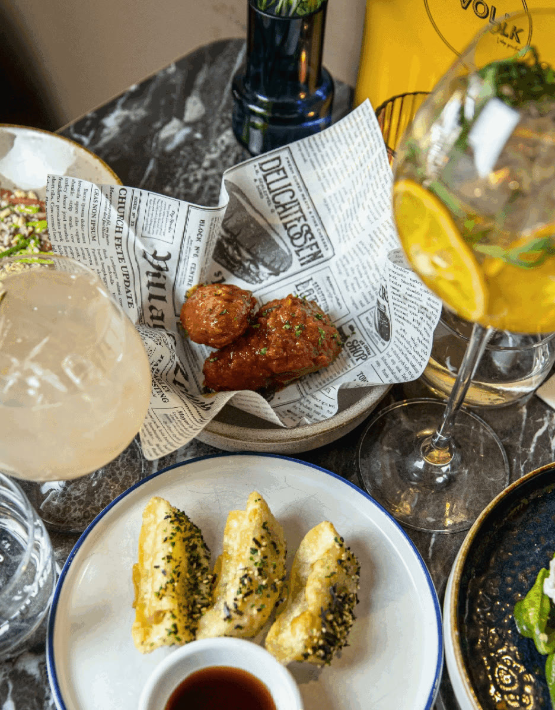
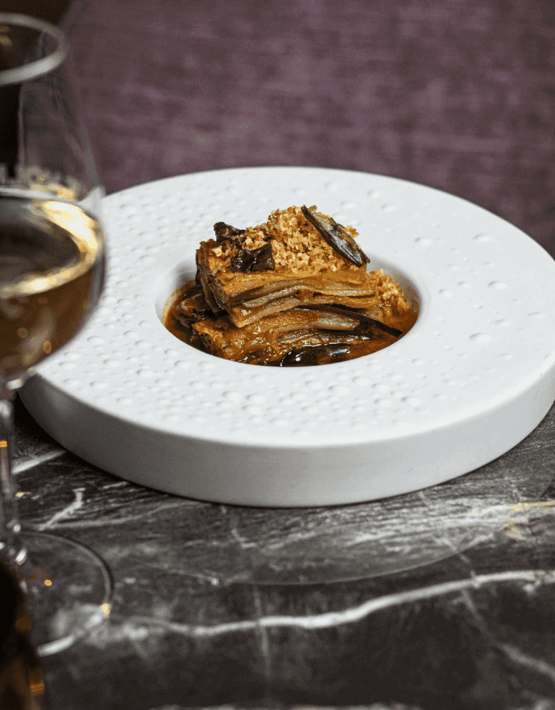
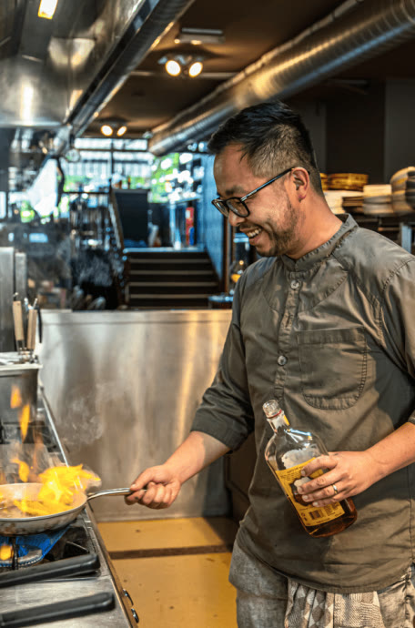
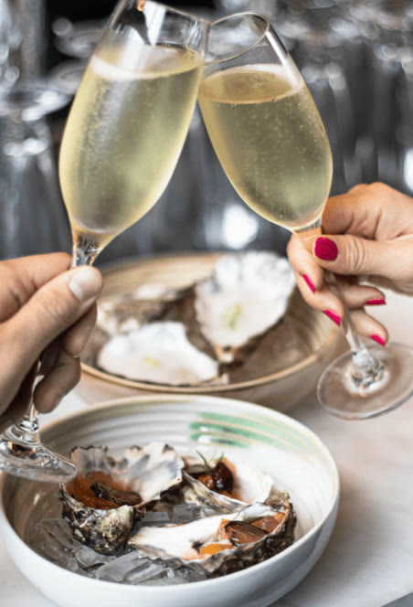
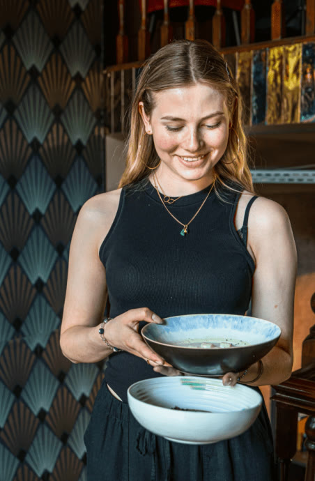
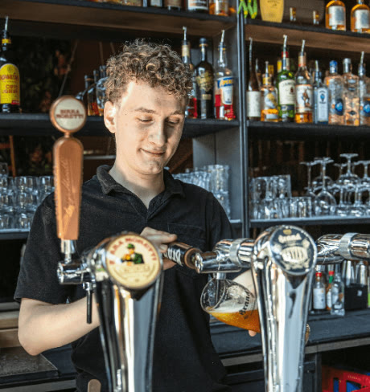

Wereldse gerechten, onbeperkt en zonder tijdslimiet.
Kleine borden om samen te proeven, ronde na ronde. In hartje Arnhem, aan de Velperbuitensingel. Elke avond vanaf half zes.
43,50 per persoon onbeperkt vrijdag en zaterdag 45,95

Alle tijd om ontspannen te tafelen.
Bij 't Volk in hartje Arnhem geniet je van wereldse gerechten, zonder tijdslimiet. Kies voor onbeperkt dineren met kleine gerechten om samen te proeven, of bestel a la carte.
Op het menu staan favorieten van 't Volk in een modern jasje, met de Franse keuken als uitgangspunt. We werken met seizoensproducten, dus het menu wisselt regelmatig. Alles wordt dagelijks vers bereid en is net iets kleiner dan normaal, zodat je meer smaken kunt proeven.
Geen buffet, geen haast. Per ronde bestel je, en je deelt aan tafel.

Zo werkt onbeperkt genieten
- Kies je ronde. Per ronde bestel je 1 gerecht per persoon (sides niet meegerekend).
- Proef en deel. Is het gerecht op, geef dan de volgende gang door. Gerechten komen mogelijk niet allemaal tegelijk.
- Tot 21:30 warm. De warme keuken sluit om 21:30. Desserts kun je ook daarna nog bestellen.
- Sluit af met een dessert. 1 dessert per persoon, een extra dessert kan tegen een supplement.
Prijzen onbeperkt
- Volwassene
- 43,50
- Vrijdag en zaterdag
- 45,95
- Feestdagen (behalve Kerst)
- 45,95
- Kids 3 t/m 11 jaar
- 3,00 per levensjaar
Prijzen per persoon. Gerechten met een * hebben een supplement. Per tafel geldt 1 formule: onbeperkt of a la carte. Heb je een allergie? Meld het ons.




Iets te drinken erbij
Een greep uit de drankkaart. De volledige kaart, met wijnen, koffie, thee en digestieven, staat in de PDF.
Aperitief
- Negroni 9,5
- Limoncello spritz 10,5
- Aperol spritz 11
- Rosa vlierbloesem spritz 12,5
Mousserend
- Cava 7,5 / fles 40
- Cava rosé 8,5 / fles 45
- Champagne Barons de Rothschild fles 81
Cocktails
- Gin tonic 10,5
- Paloma 10,5
- Espresso martini 11
- Sour power 11,5
- Back to Bali 12,5
- Amaretto sour 12,5
- Pornstar martini 12,5
Van de tap
- Birra Moretti 25 cl 3,75
- Birra Moretti 50 cl 7,5
Wijn van het huis
- Wit of rood, glas 5,75
- Wit of rood, fles 31
- Rosé, glas 5,75
- Rosé, fles 30
Met een groep vanaf 8 personen
Op zoek naar een gezellig restaurant in het centrum van Arnhem voor een receptie, bruiloft, borrel of (personeels)diner? Wij hebben verschillende menu's, die we graag afstemmen op jouw wensen. Eventueel aangevuld met een compleet all-in drankarrangement.
Neem contact op, dan maken we een passend voorstel.
Word ook van 't Volk
Wil jij je aansluiten bij ons volk? We zijn altijd op zoek naar nieuwe collega's in de keuken en in de bediening. Neem contact met ons op, dan drinken we snel samen een kop koffie.
Kom langs
Open
Maandag t/m zondag 17:30 tot 23:00
De warme keuken sluit om 21:30.
Contact
Blijf op de hoogte
Nieuwe kaart, iets te vieren? Schrijf je in voor de nieuwsbrief, of volg @volkarnhem.